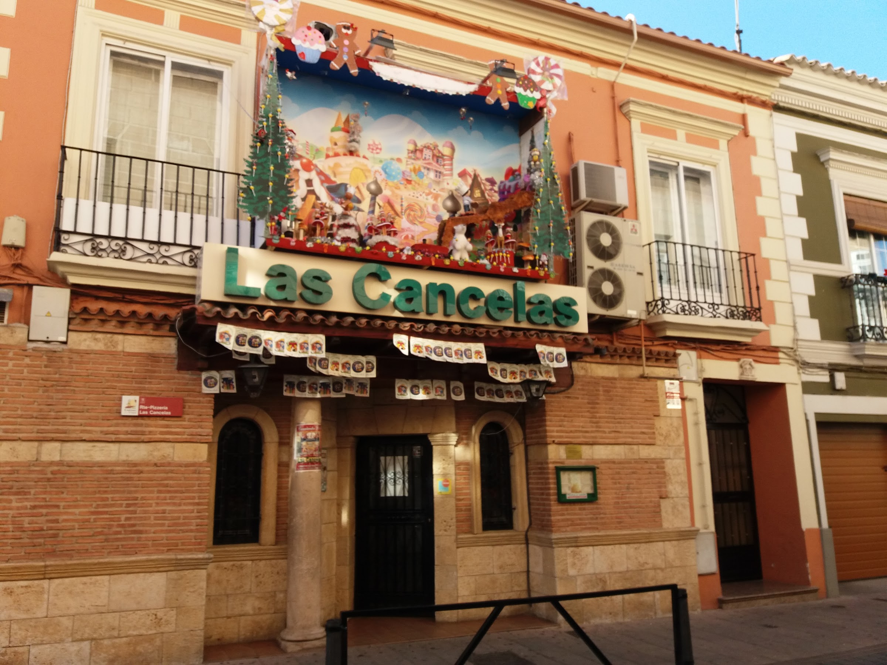
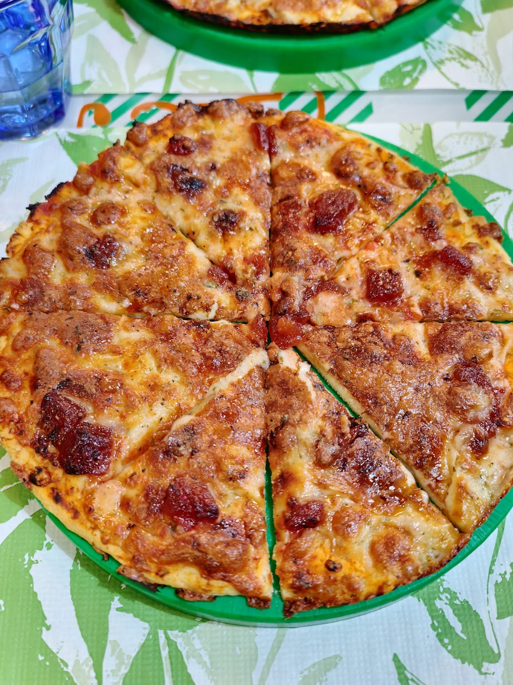
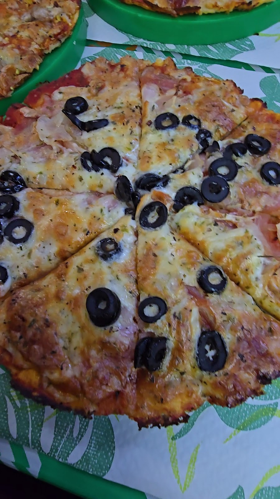
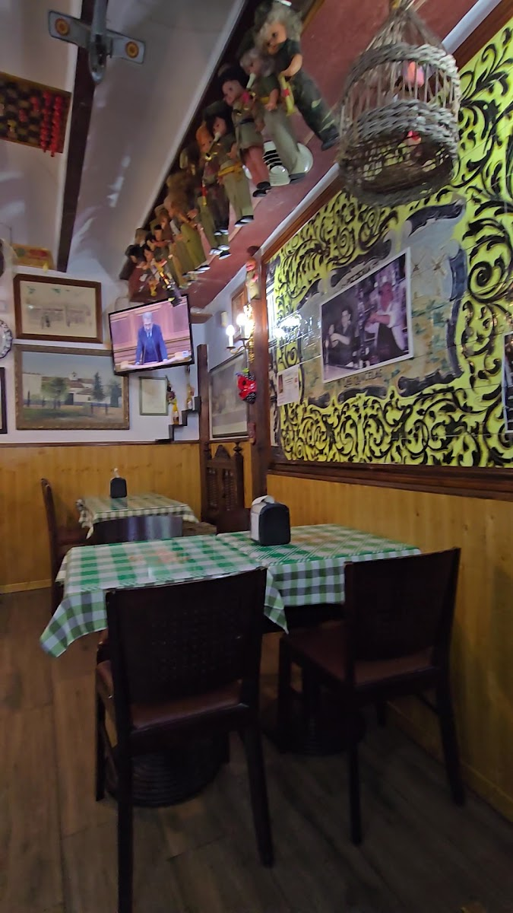
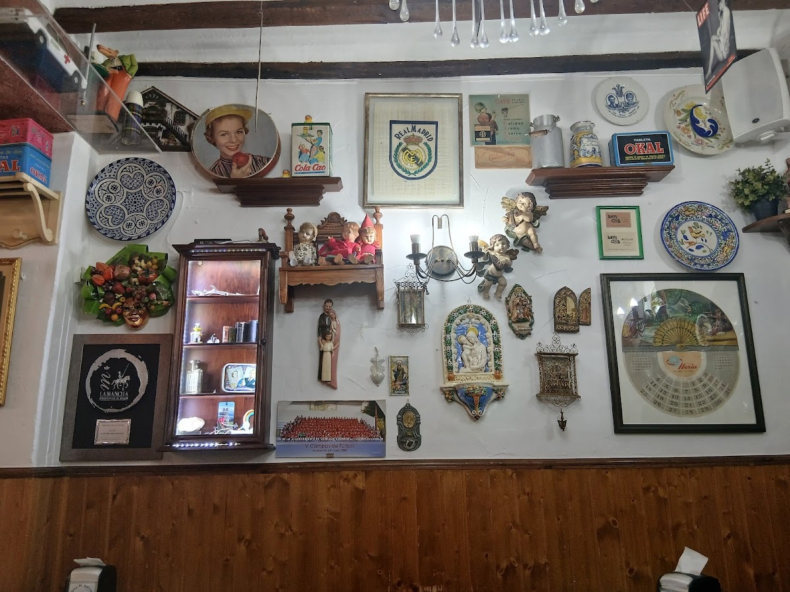
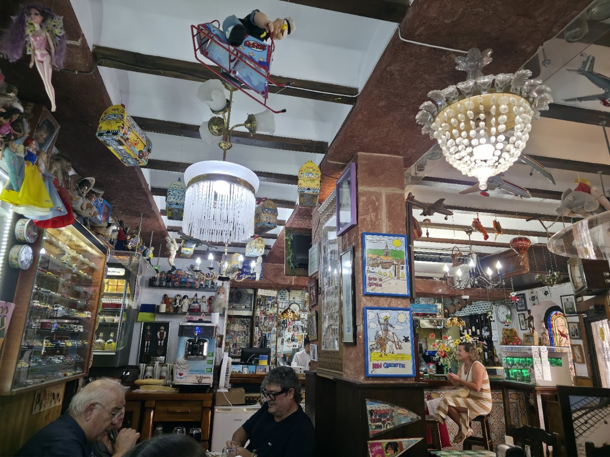
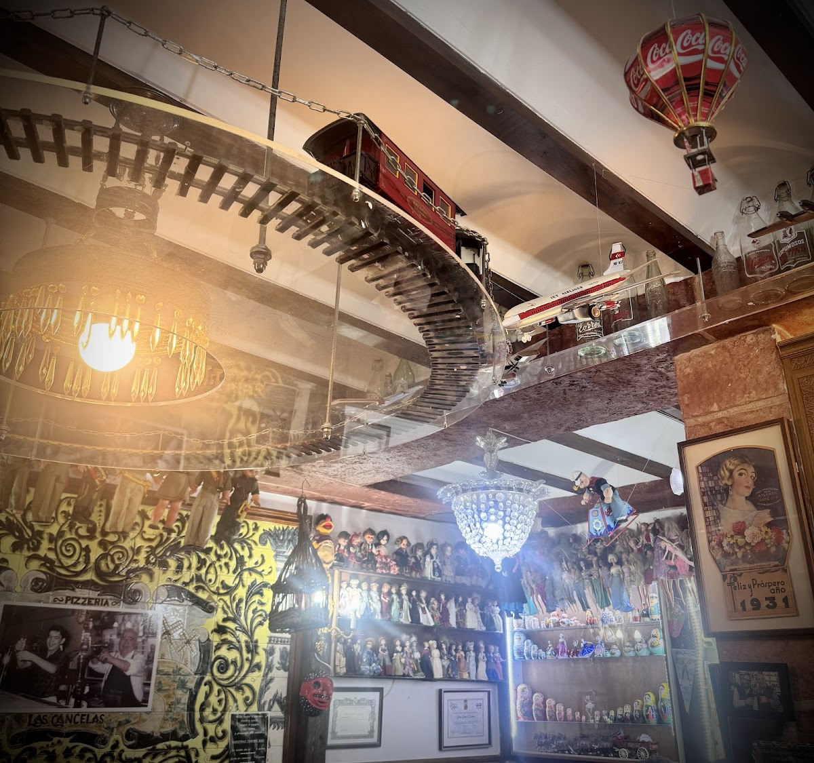
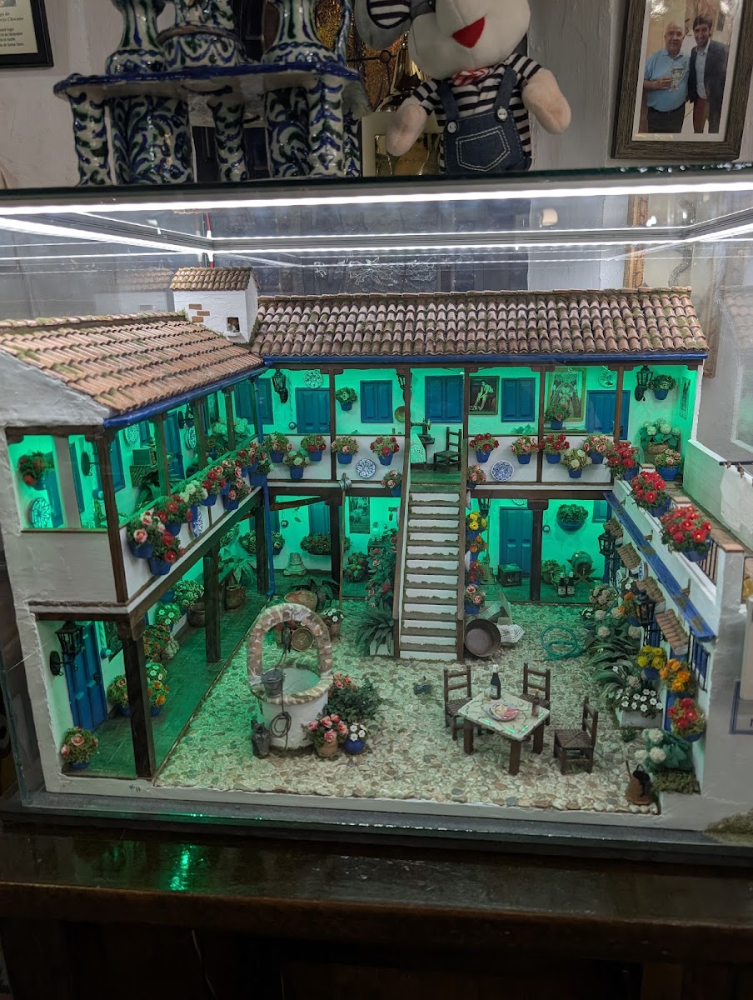
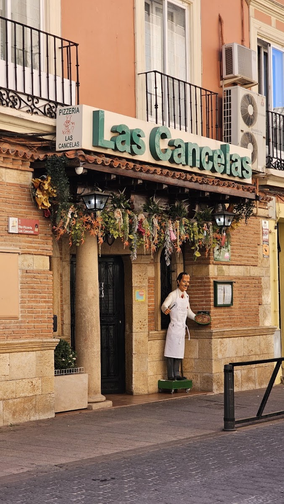
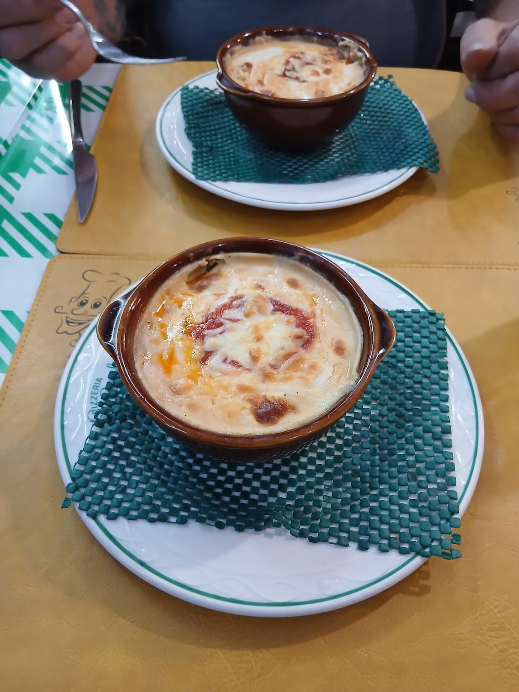

Ven a verlo en persona.
Calle San Francisco, 20. De miércoles a domingo, a mediodía y por la noche.
Horario y dirección
La primera pizzería manchega del mundo. Pizza en bandeja metálica a 300 grados, con sabores de La Mancha, en un local chiquitito de azulejo y manteles de cuadros. En Alcázar de San Juan.
¡Pasa, que el horno ya está a 300 grados y la mesa puesta!
El cocinero de Las Cancelas, desde la calle San Francisco
No somos una pizzería italiana. Somos manchegos. Nuestra pizza se hace sobre bandeja de metal, en horno a 300 grados, con queso manchego, membrillo, lomo de matanza y tomate de Herencia.


Cerámica en las paredes, un tren por el techo, juguetes en cada rincón y una maqueta que se merece una visita por sí sola.

01Manteles de cuadros y sillas castellanas.

02Platos, escudos y recuerdos de toda la vida.

03Lámparas, juguetes y detalles por todas partes.

04Los peques no le quitan ojo.

05Una de las joyas de la casa.

06El cocinero de la entrada ya te está esperando.
Calle San Francisco, 20. De miércoles a domingo, a mediodía y por la noche.
Horario y dirección
Un comedor pequeño donde cada pared cuenta algo. Quien viene una vez se acuerda de la decoración, de los juguetes y del trato de Víctor y su equipo.
Trato inmejorable y las pizzas, lasaña, empanada y su sangría fresquita.
Toda una experiencia gastronómica y cultural. Las mejores pizzas de la provincia.
Comida casera, postres caseros, todo muy rico y un trato excelente.
Ven con tiempoNo se reservan mesas de menos de 10 personas y los fines de semana hay cola. Si no quieres esperar, llama y te la llevas a casa.